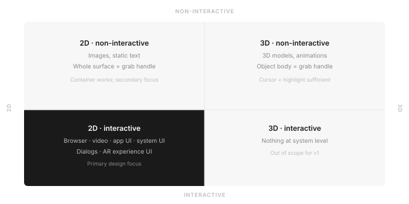
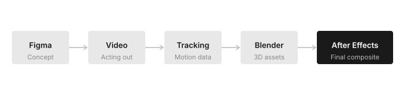

Designing the foundational pattern for moveable UI in AR space
When I joined the Spectacles product design team, there was an existing approach to moveable UI that had several compounding problems. Targeting it was difficult and fatiguing — the interaction surface was too small for the precision hand tracking demanded at the time, and users struggled to reliably grab and move things in space. It also offered no room for system-level functions — closing, scaling, switching between world and body anchoring would all have to live somewhere else, solved separately. The experience felt fragile rather than intentional.
There was no spatial UI primitive. There was no pattern. Everything was being solved ad hoc.
Design a spatial container that makes AR panels feel like first-class objects in space — easy to grab, easy to move, and extensible enough to carry the system functions that flat UI in AR would need over time.
The first question was scope: which objects actually need a move affordance? Not everything in AR space behaves the same way. A 3D model sitting in the world is non-interactive — its entire body can serve as a grab handle, with cursor shape and hover highlight doing the signaling work. But 2D interactive content is fundamentally different. A browser, a video player, a system dialog — these have their own internal controls. The whole surface is already spoken for.
That left the question of where the move affordance could live. Mixing world-space manipulation with content interaction on the same surface would require the input system to reliably distinguish intent — and hand tracking at the time wasn't there yet. Separating the two was both a usability decision and a pragmatic one.
That also opened a question: if the affordance had its own dedicated zone, what else could live there?

Starting from this map, a pattern emerged. 3D non-interactive objects — models, props, anything without internal controls — already afford movement naturally. The real-world analogy is direct: any object of reasonable size and weight can be grabbed and moved. In AR, the same logic applies — grab the body, communicate the state change through cursor shape or a subtle highlight. No wrapper needed.
2D non-interactive content works similarly. An image, a static display — the whole surface is available as a grab handle.
But 2D interactive content breaks this model entirely. A web page, a UI panel, an app interface — the surface is spoken for. Every part of it is doing something. Grabbing the body means competing with the content's own controls.
The solution kept the same fundamental metaphor — grab the object and move it — but relocated the grab surface. Instead of the body, the frame around it. A border wide enough to target reliably, visually distinct from the content inside, and familiar enough from desktop windowing that the learning curve was minimal. Users already knew what a window frame was for.
I started in Figma — not to produce deliverables, but to think visually. Sketching the frame, exploring what the affordances should communicate, working out where system functions would live. Once the concept was solid, I mapped the interactions: cursor states, the frame's visual feedback on hover, the feedback hierarchy between cursor and frame.
Then I wrote a scenario — a storyboard of interactions I needed the prototype to show. Three Containers in front of a user. Within that setup I choreographed interactions with all of them: hovering over frames, content, scale affordances, and system buttons to visualize feedback on both the cursor side (shape changes to communicate intent) and the frame side (a dynamic highlight showing exactly where the user is targeting).
I recorded myself acting all of this out, framed deliberately so I knew where the Containers would sit in the final composite. I tracked the footage and brought it into Blender and After Effects. Built the UI assets in 3D, animated the full interaction model, and comped everything together.
This was before agentic tools existed. Without coding skills, animation was the fastest way to validate a highly interactive spatial design — no Figma prototype could communicate what the interaction felt like in 3D space.
I presented the prototype to Evan Spiegel. He greenlit it for further development and real-time prototyping in Lens Studio.

The frame margins were deliberately generous — designed to be adjustable within a range, with the default tuned to balance grabbability against visual footprint. Grabbable from any side, top, or bottom. The large surface area made targeting forgiving, and as hand tracking improved over subsequent hardware generations, the defaults were refined accordingly.
The frame wasn't just a grab handle — it created real estate for the functions that spatial UI needed: close, world-to-body anchor switching, scaling. These could live on the frame itself, contextually, without cluttering the content inside.
In Lens Studio, developers can adjust border size dynamically — for example, tying affordance size to distance from the camera, so panels feel more grabbable as they move further away. Developers can also choose whether the Container billboards to face the user at all times, or stays fixed in world space. The Container is a system, not a fixed component.
Schematic recreation · Character rig: Rain by Blender Studio, modified (reposed, animated, lit) · CC BY 4.0
The Container was built internally first, refined through iterative testing, and shipped publicly in the Spectacles Interaction Kit approximately a year after the design phase. Neil Cline engineered the full real-time implementation in Lens Studio. Every moveable panel on Spectacles is a Container. On a system level, two are always present — Lens Explorer and System Settings. Developers can instantiate as many as their experience requires.
The visual design has evolved since — the team has refined the aesthetic as Snap OS has grown. The interaction design has not changed. That stability is the thing I'm most proud of: a spatial UI primitive that became part of Snap OS and has stayed right.
Lens Studio screen recording · © Snap Inc.